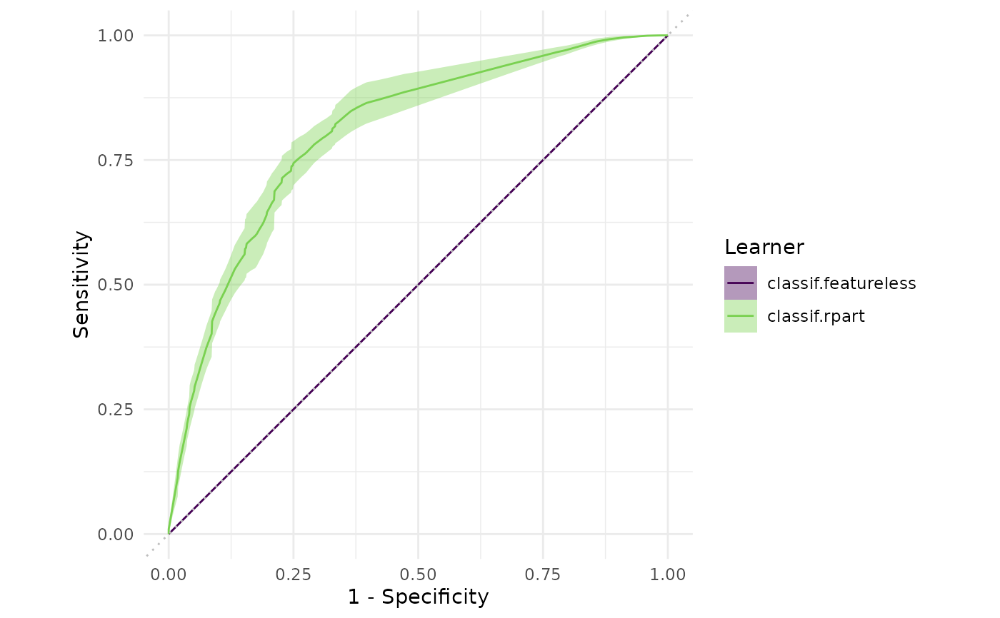
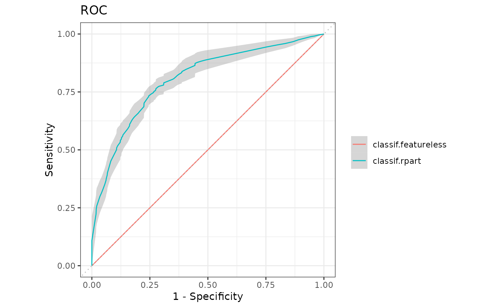

Generates plots for mlr3::BenchmarkResult, depending on argument type:
"boxplot"(default): Boxplots of performance measures, one box per mlr3::Learner and one facet per mlr3::Task."roc": ROC curve (1 - specificity on x, sensitivity on y). The mlr3::BenchmarkResult may only have a single mlr3::Task and a single mlr3::Resampling. Note that you can subset any mlr3::BenchmarkResult with its$filter()method (see examples). Requires package precrec. Additional arguments will be passed down to the respectiveautoplot()function in package precrec. Argumentscalc_avgandcb_alphaare passed toprecrec::evalmod()."prc": Precision recall curve. See"roc".
Usage
# S3 method for BenchmarkResult
autoplot(object, type = "boxplot", measure = NULL, ...)Arguments
- object
- type
(character(1)):
Type of the plot. See description.- measure
(mlr3::Measure)
Performance measure to use.- ...
(
any): Additional arguments, passed down to the respectivegeomor plotting function.
Value
ggplot2::ggplot() object.
Theme
The theme_mlr3() and viridis color maps are applied by default to all
autoplot() methods. To change this behavior set
options(mlr3.theme = FALSE).
References
Saito T, Rehmsmeier M (2017). “Precrec: fast and accurate precision-recall and ROC curve calculations in R.” Bioinformatics, 33(1), 145-147. doi: 10.1093/bioinformatics/btw570 .
Examples
library(mlr3)
library(mlr3viz)
tasks = tsks(c("pima", "sonar"))
learner = lrns(c("classif.featureless", "classif.rpart"),
predict_type = "prob")
resampling = rsmps("cv")
object = benchmark(benchmark_grid(tasks, learner, resampling))
head(fortify(object))
#> nr task_id learner_id resampling_id classif.ce
#> 1: 1 pima classif.featureless cv 0.3116883
#> 2: 1 pima classif.featureless cv 0.4155844
#> 3: 1 pima classif.featureless cv 0.4025974
#> 4: 1 pima classif.featureless cv 0.3116883
#> 5: 1 pima classif.featureless cv 0.2857143
#> 6: 1 pima classif.featureless cv 0.3506494
autoplot(object)

autoplot(object$clone(deep = TRUE)$filter(task_ids = "pima"), type = "roc")
